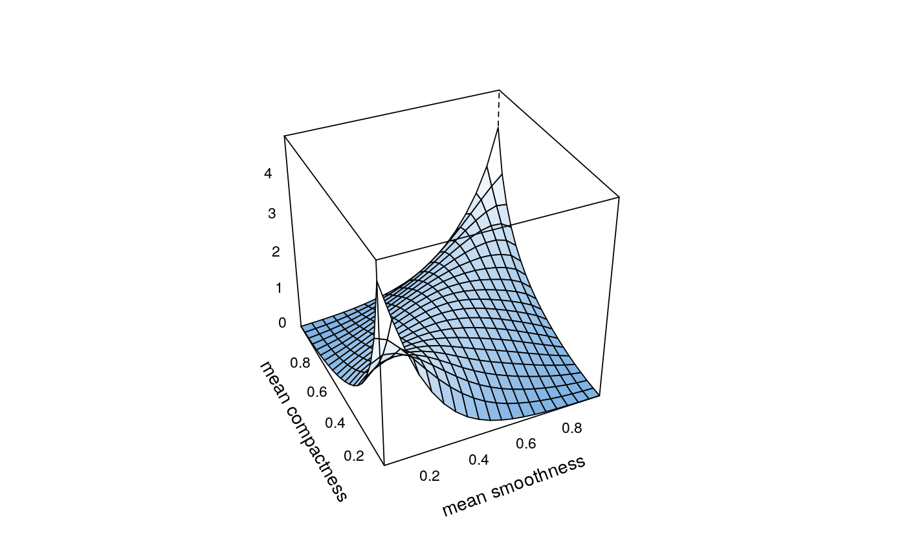

This package provides fast implementations of kernel estimators for the copula density. Due to its several plotting options it is particularly useful for the exploratory analysis of dependence structures. It can be further used for flexible nonparametric estimation of copula densities and resampling.
The function kdecop can be used to estimate a copula density
with a number of popular kernel estimators. The density estimate can be
evaluated on arbitrary points with dkdecop;
the cdf with pkdecop. Furthermore, synthetic
data can be simulated with rkdecop, and
several plot options are provided by
plot.kdecopula.
Nagler, T. (2018) kdecopula: An R Package for the Kernel Estimation of Bivariate Copula Densities. Journal of Statistical Software 84(7), 1-22 Gijbels, I. and Mielniczuk, J. (1990). Estimating the density of a copula function. Communications in Statistics - Theory and Methods, 19(2):445-464. Charpentier, A., Fermanian, J.-D., and Scaillet, O. (2006). The estimation of copulas: Theory and practice. In Rank, J., editor, Copulas: From theory to application in finance. Risk Books. Geenens, G., Charpentier, A., and Paindaveine, D. (2017). Probit transformation for nonparametric kernel estimation of the copula density. Bernoulli, 23(3), 1848-1873. Nagler, T. (2014). Kernel Methods for Vine Copula Estimation. Master's Thesis, Technische Universitaet Muenchen, https://mediatum.ub.tum.de/node?id=1231221 Wen, K. and Wu, X. (2015). Transformation-Kernel Estimation of the Copula Density, Working paper, http://agecon2.tamu.edu/people/faculty/wu-ximing/agecon2/public/copula.pdf
## load data and transform with empirical cdf data(wdbc) udat <- apply(wdbc[, -1], 2, function(x) rank(x)/(length(x)+1)) ## estimation of copula density of variables 5 and 6 dens.est <- kdecop(udat[, 5:6]) plot(dens.est)#> [1] 1.28916## evaluate cdf estimate at (u1,u2)=(0.123,0.321) pkdecop(c(0.123, 0.321), dens.est)#> [1] 0.09779868## simulate 500 samples from density estimate rkdecop(500, dens.est)#> [,1] [,2] #> [1,] 0.657731941 0.419708252 #> [2,] 0.207837910 0.150848389 #> [3,] 0.694639961 0.867218018 #> [4,] 0.711432453 0.447479248 #> [5,] 0.943706420 0.969635010 #> [6,] 0.573340682 0.582244873 #> [7,] 0.852291450 0.872283936 #> [8,] 0.311149699 0.544342041 #> [9,] 0.147333510 0.654937744 #> [10,] 0.731730036 0.478424072 #> [11,] 0.214588573 0.340667725 #> [12,] 0.254973439 0.398284912 #> [13,] 0.679856723 0.895294189 #> [14,] 0.973047823 0.977996826 #> [15,] 0.710151324 0.892364502 #> [16,] 0.830522863 0.704559326 #> [17,] 0.247942575 0.763092041 #> [18,] 0.398540270 0.210906982 #> [19,] 0.002595307 0.079437256 #> [20,] 0.617420135 0.560638428 #> [21,] 0.139052498 0.051849365 #> [22,] 0.797792856 0.672760010 #> [23,] 0.255559014 0.536346436 #> [24,] 0.641577568 0.363189697 #> [25,] 0.166200074 0.568023682 #> [26,] 0.070029189 0.109893799 #> [27,] 0.660109937 0.466461182 #> [28,] 0.762222615 0.994110107 #> [29,] 0.179988140 0.574554443 #> [30,] 0.259728940 0.303680420 #> [31,] 0.326962577 0.233123779 #> [32,] 0.331927526 0.265960693 #> [33,] 0.212289615 0.468292236 #> [34,] 0.554588144 0.651947021 #> [35,] 0.154508260 0.787139893 #> [36,] 0.073787603 0.046539307 #> [37,] 0.844944446 0.746002197 #> [38,] 0.826472592 0.919586182 #> [39,] 0.257359410 0.095001221 #> [40,] 0.129501529 0.694915771 #> [41,] 0.515242205 0.047637939 #> [42,] 0.523661483 0.680389404 #> [43,] 0.573024127 0.669464111 #> [44,] 0.691912591 0.479644775 #> [45,] 0.674265571 0.666595459 #> [46,] 0.892217924 0.610076904 #> [47,] 0.620913206 0.721099854 #> [48,] 0.292761225 0.104522705 #> [49,] 0.612123621 0.643951416 #> [50,] 0.799682476 0.508514404 #> [51,] 0.746831156 0.702056885 #> [52,] 0.586956183 0.237762451 #> [53,] 0.370331767 0.388214111 #> [54,] 0.069886389 0.020050049 #> [55,] 0.932097737 0.674652100 #> [56,] 0.409898654 0.585174561 #> [57,] 0.568316692 0.886688232 #> [58,] 0.631424568 0.852935791 #> [59,] 0.575799994 0.475921631 #> [60,] 0.475059796 0.588165283 #> [61,] 0.389886441 0.660430908 #> [62,] 0.922457936 0.701141357 #> [63,] 0.780835950 0.606781006 #> [64,] 0.121897611 0.013458252 #> [65,] 0.368493767 0.227996826 #> [66,] 0.238006620 0.104400635 #> [67,] 0.495799420 0.078826904 #> [68,] 0.358797438 0.140838623 #> [69,] 0.444671729 0.617218018 #> [70,] 0.899668560 0.663848877 #> [71,] 0.478680335 0.551910400 #> [72,] 0.459139855 0.686614990 #> [73,] 0.908157840 0.845428467 #> [74,] 0.269798030 0.891632080 #> [75,] 0.838856573 0.945098877 #> [76,] 0.298786547 0.037750244 #> [77,] 0.952000294 0.931671143 #> [78,] 0.259967701 0.936553955 #> [79,] 0.017007930 0.039398193 #> [80,] 0.634379990 0.413421631 #> [81,] 0.556254944 0.396270752 #> [82,] 0.673443982 0.408477783 #> [83,] 0.429437592 0.554962158 #> [84,] 0.372892456 0.198333740 #> [85,] 0.617104122 0.840911865 #> [86,] 0.354520694 0.446746826 #> [87,] 0.872738776 0.919219971 #> [88,] 0.289147252 0.608673096 #> [89,] 0.550425930 0.469329834 #> [90,] 0.844691871 0.971221924 #> [91,] 0.313501220 0.169952393 #> [92,] 0.103925865 0.594879150 #> [93,] 0.157729878 0.146026611 #> [94,] 0.218890225 0.178802490 #> [95,] 0.962804668 0.918670654 #> [96,] 0.799536007 0.894622803 #> [97,] 0.192931402 0.335418701 #> [98,] 0.764232948 0.743072510 #> [99,] 0.165880032 0.496673584 #> [100,] 0.245985393 0.228240967 #> [101,] 0.114512391 0.103118896 #> [102,] 0.818968804 0.529937744 #> [103,] 0.356692594 0.392852783 #> [104,] 0.555327459 0.606597900 #> [105,] 0.505494700 0.756011963 #> [106,] 0.630283260 0.462860107 #> [107,] 0.906597301 0.922760010 #> [108,] 0.696335648 0.727935791 #> [109,] 0.687676023 0.493316650 #> [110,] 0.237453076 0.157989502 #> [111,] 0.114608110 0.127227783 #> [112,] 0.856139370 0.985198975 #> [113,] 0.191179732 0.069427490 #> [114,] 0.054347266 0.569732666 #> [115,] 0.544570074 0.674835205 #> [116,] 0.083126266 0.043060303 #> [117,] 0.935016418 0.851776123 #> [118,] 0.166938091 0.140594482 #> [119,] 0.646749625 0.781951904 #> [120,] 0.967858623 0.945098877 #> [121,] 0.902732816 0.933380127 #> [122,] 0.591863465 0.557891846 #> [123,] 0.994801769 0.888214111 #> [124,] 0.901540259 0.903350830 #> [125,] 0.158165844 0.427337646 #> [126,] 0.035102877 0.150238037 #> [127,] 0.788337865 0.924896240 #> [128,] 0.695797757 0.758026123 #> [129,] 0.150103830 0.012298584 #> [130,] 0.174470032 0.293060303 #> [131,] 0.914011287 0.792144775 #> [132,] 0.743700803 0.841827393 #> [133,] 0.409348551 0.507781982 #> [134,] 0.960719446 0.997039795 #> [135,] 0.394421594 0.367889404 #> [136,] 0.442035154 0.435577393 #> [137,] 0.645682902 0.690887451 #> [138,] 0.209150874 0.444061279 #> [139,] 0.836589083 0.803985596 #> [140,] 0.337702142 0.042877197 #> [141,] 0.988734397 0.844757080 #> [142,] 0.218829713 0.194488525 #> [143,] 0.702749531 0.382293701 #> [144,] 0.032482995 0.023040771 #> [145,] 0.691050702 0.294769287 #> [146,] 0.197899779 0.236907959 #> [147,] 0.561234753 0.728668213 #> [148,] 0.436827192 0.720916748 #> [149,] 0.532984084 0.951629639 #> [150,] 0.421125719 0.847442627 #> [151,] 0.056372226 0.111358643 #> [152,] 0.735138231 0.795989990 #> [153,] 0.063063403 0.062591553 #> [154,] 0.937402864 0.983001709 #> [155,] 0.957660115 0.683990479 #> [156,] 0.588638176 0.453399658 #> [157,] 0.581045673 0.827850342 #> [158,] 0.907547265 0.751312256 #> [159,] 0.892106560 0.570770264 #> [160,] 0.166937509 0.320159912 #> [161,] 0.595983259 0.855499268 #> [162,] 0.194694750 0.226959229 #> [163,] 0.844599718 0.449249268 #> [164,] 0.751394781 0.390838623 #> [165,] 0.900164531 0.612396240 #> [166,] 0.498886962 0.856536865 #> [167,] 0.613789340 0.249908447 #> [168,] 0.647996982 0.766082764 #> [169,] 0.008115353 0.016510010 #> [170,] 0.498883670 0.202789307 #> [171,] 0.988353483 0.986053467 #> [172,] 0.157562933 0.341094971 #> [173,] 0.270586539 0.542388916 #> [174,] 0.655376394 0.149322510 #> [175,] 0.321510235 0.149993896 #> [176,] 0.512051571 0.476348877 #> [177,] 0.069208545 0.208221436 #> [178,] 0.664904679 0.798614502 #> [179,] 0.380510255 0.299041748 #> [180,] 0.660036862 0.425384521 #> [181,] 0.622960399 0.645782471 #> [182,] 0.488363212 0.664886475 #> [183,] 0.395497584 0.404205322 #> [184,] 0.820455792 0.807891846 #> [185,] 0.086861419 0.530059814 #> [186,] 0.457899384 0.863739014 #> [187,] 0.653359031 0.778900146 #> [188,] 0.460978405 0.115386963 #> [189,] 0.704958505 0.783111572 #> [190,] 0.662697790 0.476409912 #> [191,] 0.983712873 0.996978760 #> [192,] 0.955352355 0.947601318 #> [193,] 0.582111517 0.463714600 #> [194,] 0.361883245 0.600189209 #> [195,] 0.100864813 0.025543213 #> [196,] 0.153684766 0.401153564 #> [197,] 0.303042646 0.791290283 #> [198,] 0.767962630 0.908905029 #> [199,] 0.468557819 0.091033936 #> [200,] 0.239253261 0.437347412 #> [201,] 0.738376567 0.757171631 #> [202,] 0.357404279 0.325653076 #> [203,] 0.791869481 0.881988525 #> [204,] 0.216180131 0.354339600 #> [205,] 0.185879116 0.047515869 #> [206,] 0.281771073 0.619171143 #> [207,] 0.343990844 0.355438232 #> [208,] 0.412954396 0.789215088 #> [209,] 0.795066570 0.920379639 #> [210,] 0.599917300 0.426300049 #> [211,] 0.096114965 0.081268311 #> [212,] 0.337990663 0.232818604 #> [213,] 0.808740987 0.617279053 #> [214,] 0.635674817 0.858734131 #> [215,] 0.754810228 0.669097900 #> [216,] 0.313890051 0.084625244 #> [217,] 0.196720287 0.188140869 #> [218,] 0.932861990 0.830718994 #> [219,] 0.743497721 0.747161865 #> [220,] 0.634435491 0.500946045 #> [221,] 0.919244660 0.930755615 #> [222,] 0.650056635 0.365570068 #> [223,] 0.841932576 0.310150146 #> [224,] 0.069647716 0.292144775 #> [225,] 0.001174629 0.009613037 #> [226,] 0.018116738 0.001129150 #> [227,] 0.404283878 0.441009521 #> [228,] 0.877155792 0.749359131 #> [229,] 0.967973433 0.416046143 #> [230,] 0.450604922 0.391998291 #> [231,] 0.046792598 0.172393799 #> [232,] 0.298032616 0.396881104 #> [233,] 0.264996193 0.228240967 #> [234,] 0.868323128 0.608062744 #> [235,] 0.599994787 0.762664795 #> [236,] 0.708643445 0.960479736 #> [237,] 0.489952185 0.281707764 #> [238,] 0.887757181 0.608734131 #> [239,] 0.425979024 0.322601318 #> [240,] 0.366604714 0.647979736 #> [241,] 0.407733270 0.040069580 #> [242,] 0.734742536 0.941558838 #> [243,] 0.996777193 0.982452393 #> [244,] 0.539621820 0.956329346 #> [245,] 0.002614375 0.004364014 #> [246,] 0.023925265 0.376007080 #> [247,] 0.950673287 0.886383057 #> [248,] 0.479319974 0.721160889 #> [249,] 0.995466883 0.842742920 #> [250,] 0.829248670 0.835968018 #> [251,] 0.273172236 0.207672119 #> [252,] 0.417163700 0.706085205 #> [253,] 0.659255172 0.747222900 #> [254,] 0.049940002 0.125640869 #> [255,] 0.709480459 0.874664307 #> [256,] 0.857282013 0.834197998 #> [257,] 0.016912709 0.016998291 #> [258,] 0.460721354 0.246124268 #> [259,] 0.454658773 0.639984131 #> [260,] 0.344883882 0.190704346 #> [261,] 0.392168555 0.153533936 #> [262,] 0.240786120 0.222808838 #> [263,] 0.582532714 0.185394287 #> [264,] 0.386746131 0.210540771 #> [265,] 0.990981744 0.967926025 #> [266,] 0.983495619 0.939483643 #> [267,] 0.945815283 0.930816650 #> [268,] 0.729219155 0.546905518 #> [269,] 0.950924951 0.908966064 #> [270,] 0.270184667 0.755096436 #> [271,] 0.986594948 0.829925537 #> [272,] 0.687626511 0.821746826 #> [273,] 0.329563093 0.399261475 #> [274,] 0.799381141 0.600494385 #> [275,] 0.713398703 0.848968506 #> [276,] 0.587649311 0.915496826 #> [277,] 0.881017672 0.704986572 #> [278,] 0.976083268 0.439056396 #> [279,] 0.175210413 0.133819580 #> [280,] 0.949069972 0.554656982 #> [281,] 0.491221151 0.263641357 #> [282,] 0.477989193 0.485870361 #> [283,] 0.407784974 0.256561279 #> [284,] 0.939232257 0.943328857 #> [285,] 0.110448556 0.256744385 #> [286,] 0.199768789 0.153228760 #> [287,] 0.713729821 0.934661865 #> [288,] 0.002615845 0.007904053 #> [289,] 0.763658846 0.495513916 #> [290,] 0.737885153 0.563690186 #> [291,] 0.220059186 0.863861084 #> [292,] 0.065191952 0.093231201 #> [293,] 0.667940494 0.746734619 #> [294,] 0.660442005 0.362640381 #> [295,] 0.616446525 0.916595459 #> [296,] 0.867069320 0.607025146 #> [297,] 0.165612917 0.286590576 #> [298,] 0.893604258 0.888580322 #> [299,] 0.260793115 0.152557373 #> [300,] 0.486605743 0.154693604 #> [301,] 0.821976096 0.791412354 #> [302,] 0.361090764 0.331390381 #> [303,] 0.138674784 0.504425049 #> [304,] 0.665960320 0.238739014 #> [305,] 0.677274422 0.558074951 #> [306,] 0.004783282 0.184600830 #> [307,] 0.413656918 0.126373291 #> [308,] 0.435630046 0.506927490 #> [309,] 0.907084145 0.858612061 #> [310,] 0.858154554 0.712005615 #> [311,] 0.612293901 0.749420166 #> [312,] 0.428257959 0.499053955 #> [313,] 0.185534871 0.120697021 #> [314,] 0.944276621 0.783111572 #> [315,] 0.492915109 0.337066650 #> [316,] 0.483609826 0.129058838 #> [317,] 0.663598058 0.660308838 #> [318,] 0.314112334 0.613494873 #> [319,] 0.549093229 0.716705322 #> [320,] 0.197071938 0.531585693 #> [321,] 0.048610585 0.226470947 #> [322,] 0.931645285 0.761871338 #> [323,] 0.449127802 0.800384521 #> [324,] 0.884333966 0.984283447 #> [325,] 0.186577184 0.024627686 #> [326,] 0.720167688 0.330780029 #> [327,] 0.815136651 0.177032471 #> [328,] 0.375621317 0.374664307 #> [329,] 0.911640968 0.502166748 #> [330,] 0.742152855 0.572174072 #> [331,] 0.151023658 0.267486572 #> [332,] 0.217902921 0.505279541 #> [333,] 0.696253272 0.846771240 #> [334,] 0.438522304 0.372283936 #> [335,] 0.632962317 0.740447998 #> [336,] 0.772230370 0.801361084 #> [337,] 0.395848406 0.054718018 #> [338,] 0.180986919 0.275726318 #> [339,] 0.671877165 0.699432373 #> [340,] 0.511174022 0.692352295 #> [341,] 0.914346990 0.799285889 #> [342,] 0.273138616 0.272796631 #> [343,] 0.205677347 0.157318115 #> [344,] 0.918303049 0.625091553 #> [345,] 0.575862022 0.476226807 #> [346,] 0.006541255 0.054595947 #> [347,] 0.926026067 0.826629639 #> [348,] 0.401354799 0.542755127 #> [349,] 0.157827018 0.404571533 #> [350,] 0.257497411 0.371429443 #> [351,] 0.730845864 0.365081787 #> [352,] 0.187580498 0.145904541 #> [353,] 0.596611367 0.960418701 #> [354,] 0.110780826 0.045379639 #> [355,] 0.240295378 0.224090576 #> [356,] 0.309665438 0.379608154 #> [357,] 0.059236037 0.205718994 #> [358,] 0.727988177 0.413177490 #> [359,] 0.224311077 0.196380615 #> [360,] 0.340468831 0.106842041 #> [361,] 0.938475170 0.992401123 #> [362,] 0.306318262 0.726287842 #> [363,] 0.474218420 0.082305908 #> [364,] 0.218359346 0.676910400 #> [365,] 0.166877309 0.036895752 #> [366,] 0.127630359 0.720672607 #> [367,] 0.646492120 0.914642334 #> [368,] 0.269159423 0.445343018 #> [369,] 0.021649705 0.013275146 #> [370,] 0.861158334 0.700164795 #> [371,] 0.596691484 0.832183838 #> [372,] 0.635841775 0.179656982 #> [373,] 0.509716243 0.168914795 #> [374,] 0.966367833 0.940399170 #> [375,] 0.174273640 0.586456299 #> [376,] 0.160947754 0.522003174 #> [377,] 0.503939518 0.391815186 #> [378,] 0.093671985 0.394805908 #> [379,] 0.111433149 0.185943604 #> [380,] 0.199010950 0.185760498 #> [381,] 0.755100048 0.725982666 #> [382,] 0.730374678 0.847503662 #> [383,] 0.677603594 0.517791748 #> [384,] 0.750071903 0.197967529 #> [385,] 0.714257048 0.795806885 #> [386,] 0.330361486 0.402740479 #> [387,] 0.483104306 0.871246338 #> [388,] 0.949262396 0.852264404 #> [389,] 0.689520664 0.363616943 #> [390,] 0.860060370 0.800445557 #> [391,] 0.219707371 0.416412354 #> [392,] 0.107680341 0.378753662 #> [393,] 0.943045341 0.907012939 #> [394,] 0.800711072 0.565826416 #> [395,] 0.033988178 0.125091553 #> [396,] 0.483852512 0.514862061 #> [397,] 0.628118857 0.835845947 #> [398,] 0.924579103 0.845367432 #> [399,] 0.389474344 0.193817139 #> [400,] 0.116767381 0.133026123 #> [401,] 0.815433128 0.837554932 #> [402,] 0.666248807 0.563812256 #> [403,] 0.260590234 0.291534424 #> [404,] 0.129437695 0.095733643 #> [405,] 0.556144329 0.255035400 #> [406,] 0.315790283 0.292633057 #> [407,] 0.049011773 0.085906982 #> [408,] 0.499392647 0.459564209 #> [409,] 0.023587344 0.074249268 #> [410,] 0.602022762 0.670135498 #> [411,] 0.303512095 0.139678955 #> [412,] 0.305454134 0.082672119 #> [413,] 0.024806744 0.089080811 #> [414,] 0.555375675 0.576019287 #> [415,] 0.619119491 0.914398193 #> [416,] 0.963634601 0.976593018 #> [417,] 0.730314263 0.777679443 #> [418,] 0.238394985 0.638885498 #> [419,] 0.772974213 0.780303955 #> [420,] 0.714960999 0.815155029 #> [421,] 0.489733362 0.533355713 #> [422,] 0.162705973 0.083953857 #> [423,] 0.763296986 0.336151123 #> [424,] 0.818664324 0.982940674 #> [425,] 0.859732515 0.535430908 #> [426,] 0.972163037 0.847137451 #> [427,] 0.450814878 0.323944092 #> [428,] 0.884531691 0.989105225 #> [429,] 0.767194388 0.482025146 #> [430,] 0.316549950 0.486297607 #> [431,] 0.583144925 0.661895752 #> [432,] 0.258412898 0.278656006 #> [433,] 0.838255492 0.681243896 #> [434,] 0.206289321 0.571319580 #> [435,] 0.064704170 0.227691650 #> [436,] 0.352894880 0.558319092 #> [437,] 0.492675916 0.553558350 #> [438,] 0.229140382 0.108612061 #> [439,] 0.277803772 0.560882568 #> [440,] 0.182672088 0.491668701 #> [441,] 0.581704484 0.265167236 #> [442,] 0.255053670 0.475799561 #> [443,] 0.674416862 0.353851318 #> [444,] 0.528603422 0.779937744 #> [445,] 0.747311271 0.919158936 #> [446,] 0.375851842 0.711944580 #> [447,] 0.299104743 0.407562256 #> [448,] 0.941396771 0.950775146 #> [449,] 0.510023732 0.173370361 #> [450,] 0.319198924 0.333709717 #> [451,] 0.709524267 0.477203369 #> [452,] 0.518141436 0.619903564 #> [453,] 0.660930820 0.627593994 #> [454,] 0.054996178 0.478790283 #> [455,] 0.638340546 0.925628662 #> [456,] 0.146986039 0.224334717 #> [457,] 0.222254897 0.911651611 #> [458,] 0.226401961 0.523468018 #> [459,] 0.305341359 0.358734131 #> [460,] 0.169927668 0.110992432 #> [461,] 0.036133090 0.123382568 #> [462,] 0.590899826 0.098602295 #> [463,] 0.382101703 0.240509033 #> [464,] 0.153191030 0.023284912 #> [465,] 0.326275888 0.848663330 #> [466,] 0.940808590 0.641021729 #> [467,] 0.822869403 0.828704834 #> [468,] 0.400723770 0.213470459 #> [469,] 0.080555990 0.052154541 #> [470,] 0.854218204 0.376312256 #> [471,] 0.897257377 0.390472412 #> [472,] 0.953241835 0.851531982 #> [473,] 0.406108873 0.579864502 #> [474,] 0.164540590 0.619415283 #> [475,] 0.180278668 0.046966553 #> [476,] 0.654383833 0.554901123 #> [477,] 0.925541070 0.547271729 #> [478,] 0.062046801 0.066497803 #> [479,] 0.494534026 0.162384033 #> [480,] 0.968916612 0.734344482 #> [481,] 0.297918237 0.242767334 #> [482,] 0.168882789 0.277862549 #> [483,] 0.790972360 0.966156006 #> [484,] 0.196490364 0.764495850 #> [485,] 0.368727054 0.266693115 #> [486,] 0.270207003 0.096466064 #> [487,] 0.075054670 0.412872314 #> [488,] 0.614200671 0.205841064 #> [489,] 0.968648615 0.818206787 #> [490,] 0.113356322 0.338287354 #> [491,] 0.521208054 0.776763916 #> [492,] 0.242325973 0.213958740 #> [493,] 0.519286813 0.250762939 #> [494,] 0.252147327 0.335540771 #> [495,] 0.097435059 0.262542725 #> [496,] 0.337602619 0.531097412 #> [497,] 0.141859992 0.418731689 #> [498,] 0.622819271 0.928802490 #> [499,] 0.491809397 0.851837158 #> [500,] 0.295275017 0.521148682